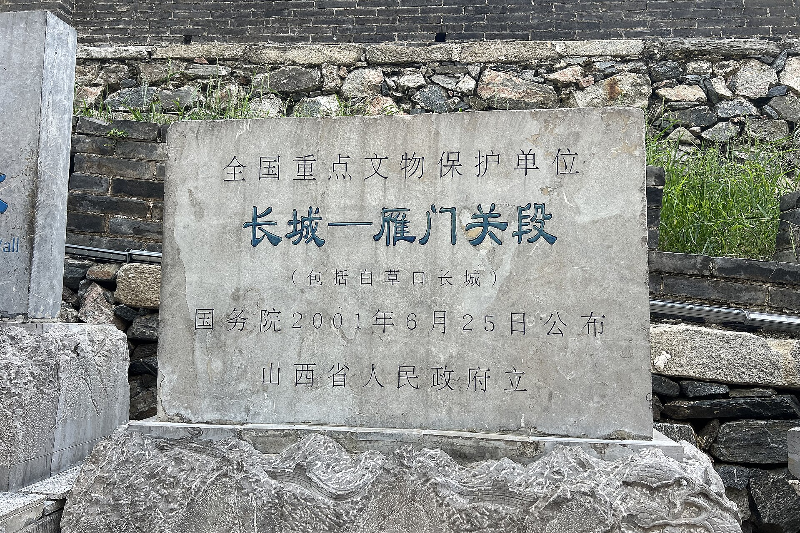

第 17 章
定调的勇气
沈明远回复陈言的邮件，是在雁门关版本交付后的第三天发出的。那封邮件只有四段。第一段确认雁门关版本将作为下月内部评审的基础。第二段列出了评审版本需要覆盖的核心模块——战斗、叙事、美术、性能。第三段申请将评审级别从常规的项目进度同步，升级为产品方向定调。第四段只有一句话：“这次评审的核心不是玩法，是方向。”
邮件发出去之后，沈明远在工位上坐了将近二十分钟，盯着屏幕上那行已发送的标记。他清楚这封邮件的分量。在此之前，《燕云十六声》在网易内部的历次评审，本质上都是进度汇报。团队展示阶段性成果，高层给出指导意见，资源在讨价还价中被重新分配。但“定调评审”意味着游戏的性质变了。它不再是一个需要证明自己能做出来的项目，而是一个必须回答自己到底要做成什么样的产品。
陈言的回复在当天下午到达。他的邮件比沈明远的更短：“同意升级为定调评审。评审团由我邀请，不限于事业群内部。你们提交的版本必须是你们认为可以对外发布的完成态。任何未定型的系统不必放进去——放了反而减分。”
“完成态”三个字，在项目组内部引发了一场无声的地震。沈明远把陈言的邮件转发给各系统负责人的时候，加了一行批注：“请各位在三天内提交各自模块的定调方案。每个方案只允许选择一个方向。同时写明放弃什么。”
这不是一个常规的开发指令。在游戏项目的日常推进中，设计方案的调整通常是渐进式的。一个系统可以保留多个备选方向，在后续版本中逐步收敛。但陈言的要求从根本上堵死了这条路。评审团要看的不是一个充满可能性的原型，而是一个已经做出所有关键选择的成品。这意味着过去几年里悬而未决的设计分歧，必须在这个版本中做出决断。
第一个把定调方案交到沈明远桌上的人是赵铮。赵铮的文档不长，结构却异常清晰。他用了三页的篇幅，把战斗系统的定调拆成了三个部分：当前状态、目标状态、放弃清单。
当前状态部分，他如实记录了战斗系统在雁门关版本中的表现数据。起手帧的平均响应延迟是零点一五秒，收招硬直的平均时长是零点四秒，武器重量对转身速率的影响系数是零点七。这些数字在拟真度评级体系中属于B级——参考了真实武术的发力逻辑，但未完全复刻。测试数据显示，雁门关区域的战斗死亡率是其他区域的三倍。玩家反馈中最集中的负面评价是“手感卡顿”和“判定不清晰”。
目标状态部分，赵铮提出的方案是：将拟真度从B级降至C级。C级的定义是保留动作风格，但放宽判定窗口。具体参数调整为：起手帧响应延迟压缩到零点一秒以内，收招硬直时长减少百分之三十，武器重量影响系数从零点七降至零点四。他特别注明，这些调整不涉及任何动作资产的重新制作。董玮团队提供的动捕数据、已完成的招式库、武器类型的差异化手感，全部保留。
放弃清单部分，赵铮列了六条。第一条是放弃对《武经总要》和《纪效新书》中特定招式链的逐帧还原。第二条是放弃武器重量对角色转身速率的实时影响。第三条是放弃不同甲胄材质对受击硬直差异的模拟。第四条是放弃历史武术中“以静制动”的蓄力机制在战斗系统中的强制性应用。第五条是放弃基于真实战场阵列的多人协同战斗AI。第六条是放弃兵器磕碰时的物理模拟反馈。
每一条放弃项后面，赵铮都标注了放弃的原因和影响评估。第一条的备注是：“逐帧还原导致起手帧延迟无法压缩，与操作流畅性的矛盾不可调和。”第六条备注是：“物理模拟对CPU的瞬时负载超出移动端性能预算，强行保留将导致大规模战斗场景的帧率崩溃。”
沈明远看完这份文档，在最后一页的空白处写了一行字：“请顾知远阅。”
顾知远的反馈没有走文档流转的流程。他直接走到了沈明远的工位旁边，手里拿着赵铮那份方案的打印稿。稿纸的边角已经被翻得起了毛边，空白处用铅笔写满了细密的小字。顾知远把稿纸放在桌上，指着他标注最多的一页——放弃清单那一页。
“拟真度降到C级，雁门关的战斗体验会变。”顾知远的语调一如既往地平稳，即使在讨论自己最在意的历史考据问题时，他的声音里也听不出情绪的波动。
沈明远问：“变好还是变坏？”
顾知远想了想，给出了一个不像回答的回答：“会变得不那么让人沮丧。”
这个措辞很精确。雁门关版本的内部测试数据，顾知远是最早看到的人之一。战斗死亡率三倍于其他区域，玩家的挫败感在测试反馈中反复出现。顾知远作为历史考据的坚持者，他当然希望保留那些基于真实武术的判定逻辑。但他也清楚，如果玩家在战斗中反复死亡，他们对雁门关叙事的共情就会被挫败感覆盖。一个在城墙上死了五次的玩家，不会在意那封藏在墙砖缝隙里的士兵家书。他只想赶快打完，然后离开这个让他感到挫败的地方。
“雁门关的叙事核心是战争损失感，”顾知远说，“这种感受的前提是玩家在乎自己的角色。如果角色死了太多次，他就不再是戍边的士兵，而是操作失误的玩家。”
沈明远把这句话记在了笔记本上。他翻开新的一页，写下：“顾知远：角色死亡次数与叙事共情的反比关系。”然后在这行字下面加了一句自己的判断：“拟真度的代价不是开发成本，是叙事效能的衰减。玩家在战斗中死亡，挫败感会覆盖对历史叙事的共情关注。”
这个判断后来成为定调清单上战斗系统决策的核心逻辑。赵铮的方案在两天后获得批准。批准邮件里，沈明远加了一条补充要求：“保留‘势’系统的完整框架。格挡、招架、拆招的判定逻辑不做简化。这部分是战斗系统与历史武术的最后接口。”
陆辰的定调方案在赵铮的方案获批之后第三天提交。陆辰的文档比赵铮的长了将近一倍。这不是篇幅失控，而是叙事系统的定调涉及的问题比战斗系统更复杂。战斗系统的核心矛盾是拟真与爽快之间的取舍，这是一个相对清晰的二元选择。叙事系统的矛盾则是多维度的：碎片化与线性的比例、主线与支线的权重、引导与探索的边界、文本量与体验节奏的平衡。
陆辰在文档的开头部分，先回顾了叙事系统在第一次外部封闭测试中暴露的问题。第二章的完成率只有百分之三十五。大量玩家在碎片化引导下迷失方向，不知道下一步该去哪里，不知道该关注哪些线索，甚至不知道主线任务和支线任务的区别。那次测试之后，叙事组被迫接受了“需要加强引导”的结论。但陆辰一直在抵抗一个倾向——把碎片化叙事彻底改回传统MMO的线性任务链。在他看来，碎片化不是设计缺陷，而是《燕云十六声》区别于市面上所有同类产品的叙事根基。放弃碎片化，等于放弃这款游戏最独特的叙事价值。
他的定调方案，本质上是为这个矛盾寻找一个可交付的折中点。方案的核心概念叫“主线骨架”。具体做法是：在保留全部碎片化叙事内容的前提下，用一条贯穿全篇的主线任务链将所有碎片串联起来。这条主线不是传统意义上的任务序列，而是一系列关键历史节点的连续呈现。玩家在主线中会经历后晋割让燕云十六州、契丹南侵、边军抵抗、民间武装兴起等重大历史事件。每个事件都是一个叙事枢纽，从枢纽向外辐射出大量的碎片化支线。玩家可以选择沿着主线推进，也可以在任何时候离开主线进入碎片化探索。但无论走多远，主线都会像骨架一样支撑着整个叙事结构。
陆辰在文档里附了一张结构图。图的正中间是一条粗线，标注为“主线骨架”。粗线的两侧延伸出密密麻麻的细线，标注为“叙事碎片”。每一条细线和粗线之间都有一个连接点，标注为“叙事枢纽”。图的右下角有一行小字：“碎片化不是无政府状态。它需要一个宪法。”
沈明远看到这张图的时候，想起了雁门关方案讨论时陆辰提出的“时间层叠”概念。那个方案的核心是在同一空间内叠加不同时代的历史碎片，让玩家在探索中感受到时间的厚度。雁门关版本证明了时间层叠的可行性，但也暴露了一个问题：它太依赖玩家的主动探索意愿。如果玩家不愿意探索，那些精心设计的历史碎片就只是一堆无人问津的美术资产。主线骨架方案的实质，是在时间层叠的基础上加了一层引导机制。它不强迫玩家按照固定路线前进，但确保每一个玩家都能找到前进的方向。
沈明远在文档末尾批了一行字：“主线骨架与碎片化的接口需要更精确的定义。哪些碎片是必经的？哪些是可选的？可选的碎片如何被玩家发现？”
陆辰在四天后提交了补充说明。他把叙事枢纽分成了三个层级。第一层是“必经枢纽”，所有玩家在主线推进中都会自然触达。第二层是“引导枢纽”，通过NPC对话、环境提示、地图标记等方式引导玩家发现。第三层是“隐藏枢纽”，完全依赖玩家自主探索，没有任何显性引导。三层枢纽的比例被设定为三比五比二。百分之三十的叙事内容是所有玩家都会体验到的，百分之五十需要通过一定的引导才能发现，百分之二十是纯粹的隐藏内容。这个比例后来成为叙事系统定调的基准线。它在碎片化的开放性和线性的可控性之间找到了一个可量化的平衡点。
林铮的定调方案是最后一个提交的。他的文档只有一页半。标题是“引擎与性能的定调承诺”。内容不是方案选择，而是一组硬指标。他列出了评审版本必须达到的性能基准：雁门关区域在目标硬件上的帧率不低于三十帧，加载时间不超过四十五秒，内存占用不超过三点五GB。每一条指标后面都标注了“已达成”或“待优化”。“已达成”的条目有七条，“待优化”的条目有三条。
三条待优化项分别是：动态天气切换时的瞬时帧率波动、大规模NPC集结场景的绘制调用次数、移动端版本的纹理压缩效率。林铮在文档末尾写了一句话：“这三项可以在评审前解决。如果解决不了，我会在评审前一天告知。”
沈明远看完之后，给林铮单独发了一条消息：“大规模NPC集结的场景，评审时会不会崩？”
林铮的回复在三十秒后到达：“取决于集结规模。雁门关城墙上站五十个NPC没问题。站一百个，帧率会掉到二十五以下。站两百个，我不知道会发生什么。”
沈明远问：“评审团会看到多少？”
林铮回：“看赵铮的战斗设计。如果他在雁门关放一场守城战，城墙上至少需要八十个NPC才能营造战场氛围。八十个在我的可控范围内。”
沈明远把这段对话截图发给了赵铮。赵铮的回复很简短：“守城战设计已定。城墙NPC数量：七十二个。其中四十八个为静态模型，二十四个为可交互战斗单位。林铮的预算够用。”
这种精确到个位数的沟通方式，在定调评审前的冲刺期成为项目组的常态。没有人再说“尽量做好”或者“争取优化”。那些模糊的承诺在定调评审面前没有任何意义。沈明远在定调清单的第一行就写明了规则：未达标的系统不纳入评审范围，视为自动放弃首发资格。这意味着任何不能在评审前达到完成态的系统，都将从首发版本中移除。没有人愿意自己的模块被移除。
定调清单本身是一份Excel文件，创建于三个月前，最后一次修改是在评审前一周的周四。文件的第一个sheet列着十二个大项，每个大项下面挂着三到六个不等的子项。子项的右侧有四列：当前状态、目标状态、决策截止日、责任人。在“决策截止日”那一列，所有日期都被改成了同一天——评审日倒推七天。
冲刺期的项目组呈现出一种奇特的节奏。白天的工作时间相对安静，大家都在各自的工位上埋头处理手头的任务。真正的风暴发生在每天的站会之后。下午四点，各系统负责人会在沈明远的办公室里开一个不超过二十分钟的同步会。会议室里没有椅子，所有人都站着。沈明远在墙上贴了一张A3纸大小的定调清单副本，每一项后面用红黄绿三色标注进度。绿色意味着已达标，黄色意味着进行中但存在风险，红色意味着未达标。
清单上的红色条目在冲刺期的第一周有九条。第二周降到了五条。第三周降到了两条。最后一周，全部转绿。
但颜色的变化并不能完全反映真实的状态。有些绿色条目的背后，是系统负责人做出了艰难取舍之后的结果。雁门关区域的叙事密度调整就是一个例子。陆辰最初在雁门关布置了四十七个叙事碎片。这个数字在定调清单上被标注为绿色，意味着“已完成”。但在评审前的第十天，陆辰自己把它改成了三十二个。他砍掉的那十五个碎片，全部集中在雁门关外围的乡村区域。砍掉的原因不是做不完，而是测试反馈显示那些碎片严重拖慢了玩家的推进节奏。
玩家在从雁门关南门走到北门的路上，会触发七个叙事碎片。每一个碎片都需要停下来阅读、聆听或者做出选择。七个碎片加起来，让这段原本五分钟的路程拉长到了将近二十分钟。测试玩家的反馈是：“我觉得自己不是在探索边关，而是在逛博物馆。”
陆辰在定调清单的备注栏里写了一行字：“叙事密度不等于叙事质量。雁门关外围碎片从四十七个减至三十二个。砍掉的内容转入隐藏枢纽，有兴趣的玩家仍可通过探索触发。”那十五个碎片里有几个是陆辰自己亲手写的，从文案到配音到场景布置，每一个环节都倾注了大量心血。但他在定调评审面前，选择了砍掉它们。
类似的选择发生在每一个系统里。许程的美术团队在评审前两周完成了一次大规模的资产审查。审查的标准只有一个：每一个美术资产是否服务于产品的最终气质。审查的结果是，大约百分之十二的已制作资产被标记为“风格不一致”。这些资产大部分是项目早期制作的，那时候产品的视觉方向还没有完全确定，美术团队尝试了多种风格。有的偏写实，有的偏水墨，有的偏奇幻。在雁门关版本中，这些早期资产被保留了下来，因为它们分散在地图的边角，不太引人注目。但定调评审的要求是“不可更改的最终气质”，这意味着任何风格不一致的资产都不能出现在评审版本中。
许程把这些资产列了一张表，发给沈明远。表的标题是“待替换资产清单”。下面列着六十七个条目，包括建筑、植被、道具、服装和特效。每一项后面都标注了替换方案和所需工时。总工时加起来是四百二十人天。许程在邮件里写：“如果要在评审前全部替换，我需要从其他模块借调八个人，工期三周。”
沈明远看完邮件，把许程叫到了办公室。他问了一个问题：“这六十七个资产里，有多少是玩家在正常推进中一定会看到的？”
许程估算了一下，回答：“大约三分之一。剩下的都在支线区域或者隐藏角落。”
沈明远说：“优先替换那三分之一。剩下的在评审后继续做，但不作为评审版本的必选项。”
许程点了点头。他没有争辩。他知道沈明远的逻辑——定调评审的核心是让评审团看到产品的最终气质，而不是让评审团检查每一个角落的美术资产。只要核心路径上的视觉表现达到了定调标准，评审的目的就达到了。至于那些藏在角落里的不一致资产，它们不会影响评审团的整体判断。
冲刺期的最后三天，项目组进入了一种近乎沉默的状态。不是因为没话说，而是因为每个人都在做最后的确认。沈明远在最后三天里收到了三百四十七条消息。每一条消息都是一个确认项。赵铮确认战斗系统的判定窗口参数已锁定。陆辰确认主线骨架的七个叙事枢纽全部通过测试。林铮确认雁门关守城战的帧率稳定在三十二帧。许程确认核心路径上的六十七个美术资产全部替换完毕。音效组确认雁门关的风声、马蹄声、兵器碰撞声和背景音乐的空间定位准确。UI组确认所有界面的字体、颜色、布局和交互逻辑统一。
每收到一条确认消息，沈明远就在定调清单上打一个勾。最后一天晚上十点，清单上的所有条目都打上了勾。他把清单打印出来，装进一个透明的文件袋里，放在自己的办公桌上。
离开办公室的时候，他在走廊里遇到了顾知远。顾知远手里拿着一本翻旧了的《旧五代史》，正在看卷八十九，晋少帝纪。沈明远看了一眼书页，上面有一段被荧光笔划过的文字：“契丹入雁门，杀掠甚众。”
顾知远注意到了他的目光，把书合上。他说：“明天评审团会看到雁门关。他们会看到城墙、士兵、旗帜和烽火。但他们不会看到这行字。”
沈明远说：“他们不需要看到这行字。他们只需要感觉到它。”
评审当天早上八点，沈明远第一个到达评审室。评审室设在网易杭州总部大楼的十七层，是一间专门用于重要版本评审的隔音会议室。房间不大，一张长条桌，十二把椅子，一面墙是落地玻璃，另一面墙上挂着一块八十五寸的显示器。沈明远把笔记本电脑接上显示器，打开评审版本的启动界面。画面定格在雁门关的城墙上，镜头从城垛的缝隙间穿过，远处是连绵的灰色山峦和低垂的云层。没有音乐，只有风声。
八点十五分，林铮和赵铮到了。林铮带了一台测试机，配置和评审团将要使用的设备完全一致。他把测试机接上另一块显示器，开始跑性能监控。赵铮把一只全新的手柄放在桌上，然后开始调整显示器的色温和亮度。两人几乎没有说话，各自做着各自的事。
八点三十分，陆辰和许程到了。陆辰手里拿着一个文件夹，里面装着评审版本的完整流程说明。他把文件夹放在沈明远面前，说：“所有叙事枢纽的触发条件、对话选项和分支结果都列在里面。如果评审团问到任何叙事逻辑的问题，你可以直接翻到对应的页码。”许程带了一台iPad，里面存着雁门关区域的美术设计稿、参考图和技术参数。他把iPad放在桌上，屏幕朝下。
八点四十五分，顾知远到了。他没有带任何电子设备，只带了那本《旧五代史》。他把书放在桌角，然后坐在最靠边的椅子上。
八点五十分，评审团成员开始陆续进入。第一个进来的是产品副总裁陈言。他穿了一件深灰色的夹克，手里端着一杯美式咖啡。他在长条桌的中间位置坐下，然后对沈明远说：“今天我不提问。我只听。评审团的意见由其他人来问。”
第二个进来的是网易游戏事业群的一位高级副总裁，姓周。周总负责网易所有MMO品类的产品线，手下管着《逆水寒》《天谕》和几个未公开的在研项目。他在陈言旁边坐下，打开了面前的笔记本电脑。
第三个和第四个同时进来。一位是来自《逆水寒》工作室的资深制作人，姓吴。另一位是网易投资部派来的观察员，姓李。两人分别坐在长条桌的两侧。
第五个进来的是网易技术中台的一位架构师，姓张。他直接走到林铮旁边，两人低声交谈了几句。张架构师是弥赛亚引擎的核心开发者之一，也是最早反对为《燕云十六声》做底层重构的人之一。
最后进来的是网易市场与用户研究部的一位总监，姓刘。她负责网易所有新品的用户定位和市场策略。她坐在长条桌靠近门口的位置，打开了笔记本，翻到空白页。
九点整，评审开始。沈明远站起来，走到显示器前。他没有做PPT演示，没有播放宣传视频，没有介绍项目背景和团队构成。他只说了一段话：“各位老师，今天评审的版本是《燕云十六声》的定调版本。这个版本代表了我们对这款产品最终形态的全部理解。在接下来的四个小时里，各位将体验到一个完整的雁门关区域——从进入关城到完成守城战，从主线叙事到碎片化探索。体验结束后，请各位告诉我一件事：这款游戏，最终应该卖给谁。”
说完，他坐回自己的位置，把显示器切换到了游戏画面。评审团成员各自拿起面前的设备。周总和吴制作人选择了手柄，刘总监和李观察员选择了键鼠，陈言没有动手，只是看着屏幕。张架构师也没有动手，他在看林铮的性能监控面板。
游戏从雁门关南门外的官道上展开。一队宋军士兵正在向关城行进，玩家的角色是其中一员。镜头从队伍后方缓缓推进，掠过士兵的肩甲、矛尖和旗帜，最终定格在雁门关的城楼上。城楼的砖石纹理在晨光中呈现出深浅不一的灰色，城垛上插着几面褪色的军旗，旗角在风中微微翻卷。远处传来隐约的马蹄声，声音从右声道渐入，从左声道渐出，带着空间定位的精确感。
周总的手柄轻轻动了一下。他控制角色离开队伍，向路边的一棵枯树走去。枯树下有一块残碑，碑文模糊不清。周总在碑前停留了大约十秒，然后继续向前走。
吴制作人的操作方式完全不同。他没有离开队伍，而是严格按照主线任务的指引推进。他控制角色跟随队伍进入关城，穿过瓮城，登上城墙。他的镜头一直在观察城墙上士兵的装备细节——甲胄的编缀方式、武器的磨损痕迹、旗帜的织物质感。他在一个手持长矛的士兵面前停住了，把镜头推近到士兵的手部。那只手的指节粗大，皮肤粗糙，指甲缝里嵌着泥垢。吴制作人盯着那只手看了将近一分钟。
刘总监的操作节奏最慢。她花了将近四十分钟才从南门走到瓮城。在这四十分钟里，她触发了七个叙事碎片。每一个碎片她都完整看完，包括NPC的对话、环境叙事的文本和场景中的细节。她在瓮城的一个角落里发现了一封士兵的家书，信纸被揉成一团塞在墙砖的缝隙里。她花了两分钟读完了那封信，然后打开任务日志，确认这封信是否会被记录。它没有被记录。它是陆辰布置的第三层叙事枢纽——隐藏碎片，不提供任何任务指引，不记录在日志里，只有主动探索的玩家才能发现。刘总监在笔记本上写了一行字。
李观察员的体验方式最特别。他没有推进主线，也没有探索碎片。他控制角色在雁门关的城墙上反复奔跑，从南端跑到北端，再从北端跑回来。他在测试移动手感和镜头跟随。跑了三趟之后，他打开设置菜单，把所有画质选项调到最高，然后重新跑了一遍。帧率从三十二帧掉到了二十六帧。他把画质调回默认设置，帧率恢复。他在笔记本上写了一行字。
陈言始终没有拿起手柄。他坐在沈明远旁边，看着显示器上的画面不断切换。他的目光在城楼、士兵、旗帜和远山之间移动，表情看不出任何情绪。偶尔他会侧过头，低声问沈明远一个问题。他的第一个问题是：“这个版本和三个月前的雁门关版本，最大的区别是什么？”
沈明远回答：“三个月前是方向验证。今天是气质定调。”
陈言点了点头，没有追问。
四个小时的体验时间，在评审室里显得格外漫长。房间里很安静，只有手柄按键的咔嗒声、键盘的敲击声和显示器风扇的低鸣。没有人交谈，没有人提问，没有人中途离场。每个人都在用自己的方式体验这个版本。
十二点五十分，沈明远站起来，走到显示器前。他切换到一个黑色的待机画面，然后转身面对评审团。“体验时间结束。各位老师，请给我你们的判断。”
沉默了大约十秒。第一个开口的是吴制作人。他放下手柄，揉了揉手腕，然后说：“我先说一个技术判断。这个版本的品质，在美术和叙事层面，已经超过了《逆水寒》同期水平。雁门关的场景密度和叙事深度，放在网易所有在研项目里，可以排进前三。”他停顿了一下，“但我不确定这是不是一件好事。”
沈明远没有说话。吴制作人继续说：“《逆水寒》的用户大盘是什么样，在座各位都清楚。MMO玩家要的是社交、成长、竞争、炫耀。他们要帮会战，要排行榜，要装备光效，要情缘系统。你这个版本里，我玩了四个小时，没有看到一个组队邀请按钮，没有看到一个战力数值，没有看到一个充值入口。你让我评价这个版本做得好不好——好。但你让我判断这个版本能赚多少钱——我判断不了。”
周总接过了话头。他的语气比吴制作人更缓和，但问题的指向性同样尖锐。“沈明远，你说今天是气质定调。那我来问你，你定的这个气质，对应的用户画像是谁？”周总翻开笔记本电脑，“网易MMO品类的核心付费用户，年龄集中在二十五到三十五岁，男性占比百分之七十八，月均游戏消费在五百到两千元之间。这批用户的核心诉求是：成长路径清晰、社交关系紧密、竞争反馈即时。你今天的版本，成长路径在哪里？社交关系在哪里？竞争反馈在哪里？”
沈明远站起来，走到白板前。他拿起马克笔，画了一条横线。“这条线是时间轴。线的左端是五代十国，右端是今天。我们的用户，站在右端。他们通过《燕云十六声》向左端回溯。在这个过程中，他们要的不是成为历史学者，而是感受到历史的重量。”他在横线上画了一个点，“这个点，是雁门关。它不是一个副本入口，不是一个刷怪点，不是一个战力检测器。它是一个地方。一个曾经发生过真实战争、死过真实士兵、留下真实伤痕的地方。”

他放下马克笔，转向周总。“周总，您问我用户画像。我的回答是：这款游戏的用户，不是传统的MMO付费群体。他们是愿意在游戏里花时间阅读一封虚拟家书的人。他们是愿意在城墙上站五分钟看风景的人。他们是愿意为一个历史细节停下来的人。这批人的数量，可能没有传统MMO用户那么多。但他们的留存深度和口碑传播力，会比传统MMO用户强得多。”
刘总监放下了笔。她抬起头，看着沈明远。“你说的这批用户，在我们内部的数据里有一个名字。我们叫他们‘高感知用户’。他们占总游戏人口的百分之十二，但贡献了百分之三十八的社区内容和百分之五十二的口碑传播。他们的付费意愿不低，但付费逻辑和传统MMO用户完全不同。他们不会为了战力数值付费，但会为了一个皮肤、一段剧情、一个场景付费。”
她翻开笔记本，念了一段刚才记下的文字，“我在雁门关的城墙角落里发现了一封士兵家书。那封信没有任何任务标记，没有任何奖励提示，甚至不会记录在日志里。但我读完它之后，我在那个角落站了五分钟。我在想，如果这封信是一段付费剧情，我会不会花钱解锁它。答案是：我会。”
陈言开口了。他的声音不大，但每个人都听得很清楚。“你们做出了一个不太像网易的游戏。”
这句话在空气中停留了大约三秒。没有人接话。陈言端起咖啡杯，喝了一口，然后继续说：“不太像网易的游戏，这句话不是批评，也不是表扬。它是一个事实判断。网易的游戏，从《大话西游》到《梦幻西游》，从《倩女幽魂》到《逆水寒》，都有一个共同特征：它们很清楚自己要卖给谁。大话卖给社交，梦幻卖给养成，倩女卖给情感，逆水寒卖给沉浸。每一款产品在立项的时候就定义好了它的用户画像和商业模式。你们的《燕云十六声》，到现在还没有回答这个问题。”
他放下咖啡杯，看向沈明远。“或者说，你们回答了，但答案不是网易习惯的答案。”
沈明远没有回避他的目光。“陈总，三个月前您问我，雁门关版本的核心是什么。我说是方向。今天我告诉您，这个方向走下去，做出来的产品确实不太像网易的游戏。它的用户画像不是传统的MMO付费群体，它的商业模式不是战力和排行榜驱动，它的内容节奏不是日常任务和限时活动的循环。它是一款以历史沉浸为核心的单人叙事体验，附带轻量化的多人交互。这样的产品，在网易的产品矩阵里没有现成的参照系。”
他停顿了一下。“但这不是它的缺陷。这是它的定义。”
评审在下午两点结束。评审团成员陆续离开，每个人走之前都和沈明远握了手。吴制作人握手时说：“你选了一条最难的路。”周总握手时说：“用户画像的问题，你们需要更清晰的答案。”刘总监握手时说：“高感知用户的数据模型，我可以分享给你。”陈言是最后一个走的。他没有握手，只是拍了拍沈明远的肩膀，说：“下次评审，带一个商业模式方案来。”
评审室的门关上之后，项目组的几个人留在了房间里。林铮靠在椅背上，长长地呼了一口气。赵铮把手柄放回桌上，手指在手柄的握把处留下了一圈汗渍。陆辰合上了那个文件夹，把它推到桌子中间。许程把iPad翻过来，屏幕朝上，上面显示着雁门关城楼的一张高清截图。
沈明远走到白板前，拿起马克笔，在刚才画的那条时间轴上写了四个字：“不太像网易。”
他转过身，看着房间里的人。“这是陈总对定调版本的评价。这句话，从今天开始，就是我们的产品定义。《燕云十六声》不太像网易的游戏。它不会像《逆水寒》那样赚钱，不会像《梦幻西游》那样长寿，不会像《大话西游》那样国民。它就是它自己。一款以五代十国为背景、以历史沉浸为核心、以单人叙事为主体的开放世界游戏。”
他把马克笔放下。“接下来我们要做的，就是把这种‘不太像’变成‘不可替代’。”
那天晚上，项目组的大群里出现了一条消息。发消息的人是沈明远，时间是凌晨一点二十三分。消息的内容只有一行字：“定调评审通过。产品气质锁定。各系统按定调清单的最终参数执行，不再接受方向性修改。后续所有迭代围绕气质强化展开，不新增系统，不改变定位。”
那条消息石破天惊，却也早有征兆。早在2022年，《燕云十六声》（Where Winds Meet）随着首支实机演示在科隆游戏展的公开，就奠定了如今气质定调的核心基础：创造一个横跨清河、开封、河西、隐山等总面积相当于现实20平方公里的开放世界，让玩家沉浸于五代十国的“游侠”江湖。Everstone工作室负责人所描绘的那种‘腥风血雨’的梦寐般的肃杀体验，在此刻的定调中，终于找到了它在网易产品坐标系中的位置——一个历史沉浸与MMO框架的交集，一个需要验证的市场假设。
消息下面是定调清单的最终版截图。十二个大项，四十七个子项，每一项后面都标注着绿色的“已锁定”。截图的最下方有一行小字：“这个版本不太像网易的游戏。这就是我们要的。”
群里安静了将近十分钟。然后赵铮回了一条消息：“战斗系统参数已封存。不再修改。”陆辰跟着回了一条：“叙事骨架锁定。主线七个枢纽、三十二个雁门碎片、三层引导比例，全部定稿。”林铮的回复在凌晨两点到达：“性能基准锁定。目标硬件三十帧，移动端适配方案已冻结。”许程在凌晨三点发了最后一条：“美术资产风格规范已归档。核心路径资产全部达标。”
沈明远没有回复这些消息。他已经关掉了手机，躺在办公室的沙发上，盯着天花板。天花板上的荧光灯管发出细微的电流声，窗外的杭州城在夜色中安静得像一个巨大的布景。他想起陈言在评审结束后说的那句话——“下次评审，带一个商业模式方案来。”这句话听起来像是一个要求，但沈明远知道它其实是一个提醒。产品气质定下来了，方向清晰了，但那个悬置已久的问题仍然没有完全解决。高感知用户的数据模型再漂亮，也需要在真实的市场环境中验证。而验证的第一步，就是即将到来的首次公开亮相。这场定调，锁定了产品的气质，却没有锁定它的商业命运。
他把手伸向茶几，摸到了那本黑色封面的笔记本。翻开最新的一页，借着窗外透进来的微光，他写下了一行字：“定调完成。产品气质锁定为历史沉浸向单人叙事体验。内部评价：‘不太像网易的游戏’。外部验证尚未开始。”
他合上笔记本，闭上眼睛。走廊里传来夜班保安的脚步声，由远及近，又由近及远。脚步声消失之后，整栋楼只剩下空调系统的低频嗡鸣。那声音像极了雁门关版本里背景音效中的风声——持续、低沉、带着某种不可名状的重量。